前言
接上一次的话题，我们今天继续学习，对于上一篇文章，有朋友认为这种文章满大街都是（老实说，我也没想到这么多朋友愿意读），想学javascript不如自己买一本javascript高级程序设计来读读，其实这些朋友的想法是正确的。
但无奈这是上面下的任务，而且我认为学习有两个最为困难的阶段：
1 入门
2 飞升
我所说的飞升到不是说非常非常厉害，也就是我两年后想达到的水平罢了。
诚然入门不难，认为不难的同学其实是错误的，说他不难只能说你已经入门了，其实入门真的很难的！
就拿我来说，我入门CSS就花了很大的功夫，连现在我都觉得CSS很精秒。
我自己js入门没有我没有办法断定。什么程度算是入门，什么程度算是精通，各个人的标准都不相同，有的同学认为我js不错，其实我自己知道我事实上还差得远呢！
人人都想飞升，人人都想当“汤姆大叔”，我当然也想当大牛，拿写文章来说，一来想激励自己，二来发文章真的是一种很好的学习方式呢！
我建议大家多发技术博客，不管好坏都发！回看我两年前的东西，只能用惨不忍睹来形容，我两年后回看现在的博客，也许我仍然会认为惨不忍睹，那时候我便已经成为“汤姆大叔”也说不定呢，呵呵。
另外，对于不能入门的同学，迷茫是很大一个因素，二个月前我也非常迷茫，我也希望有同学能尽快找回自己的专注，丢掉他的迷茫，大家共同进步，所以这种博客我还是会发的，而且会坚持发下去。正如我读张鑫旭博客时看到了他的那份专注从而引燃自己的那份执着。
好了，扯得很远了，继续我们今天的任务吧。
DOM
有些朋友记忆很差的，很不幸我就是其中之一，我从来就没有把这个家伙事什么记清楚过！于是我就只能用中文读出来，有一次一个朋友用英文读了出来，我硬是不知道是什么东西！他活生生的将我带回了高中时我花了一早上硬是记不住几个单词的痛苦场景！
DOM
Document Object Model 文档对象模型
一个Window对象有一个document属性引用了Document对象
Document对象表示窗口内容，他是一个巨大的API中的核心对象，他代表操作文档的内容
了解DOM我们需要了解：
1 在文档中查询元素
2 将文档作为节点树来遍历，找的节点的祖先、兄弟和后代
3 查询和设置文档的属性
4 查询、更改文档的内容
5 创建、插入、删除节点来修改文档
DOM对象模型是表示和操作HTML和XML文档内容的基本API，这个家伙说是不复杂，但是画图要好久呢：
<html xmlns="http://www.w3.org/1999/xhtml"> <head> <title>刀狂剑痴</title> </head> <body> <h1> 叶小钗</h1> <p> 叶小钗·<strong>中原剑圣</strong></p> </body> </html>
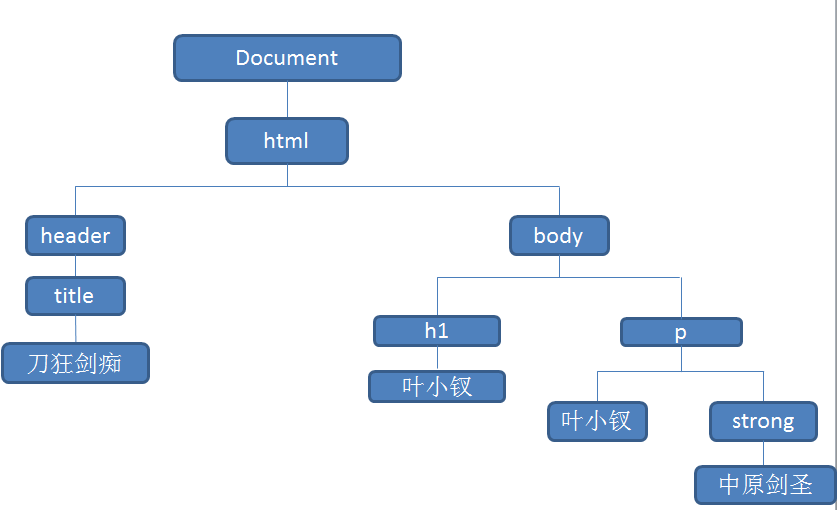
获取文档元素
根据ID选择dom元素每个朋友都知道，这里真心多此一举了，但是jquery出现后却让一切变得不那么明显了：
<html xmlns="http://www.w3.org/1999/xhtml">
<head>
<title>刀狂剑痴</title>
<script type="text/javascript">
var h = document.getElementById('h');
var p = document.getElementById('p');
var strong = document.getElementById('strong');
var s = '';
</script>
</head>
<body>
<h1 id="h">
叶小钗</h1>
<p id="p">
叶小钗·<strong id="strong">中原剑圣</strong></p>
</body>
</html>
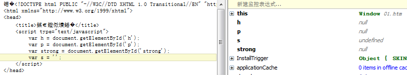
这里我一来就犯了一个错误，在dom还没有生成的情况下去获取，当然获取不到！这里我老老实实将js放到一页尾去了
<html xmlns="http://www.w3.org/1999/xhtml"> <head> <title>刀狂剑痴</title> </head> <body> <h1 id="h"> 叶小钗</h1> <p id="p"> 叶小钗·<strong id="strong">中原剑圣</strong></p> <script type="text/javascript"> var h = document.getElementById('h'); var p = document.getElementById('p'); var strong = document.getElementById('strong'); var s = ''; </script> </body> </html>
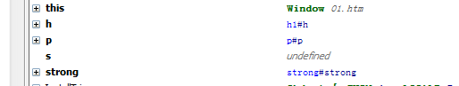
于是我们来好好的观察一下这些家伙：
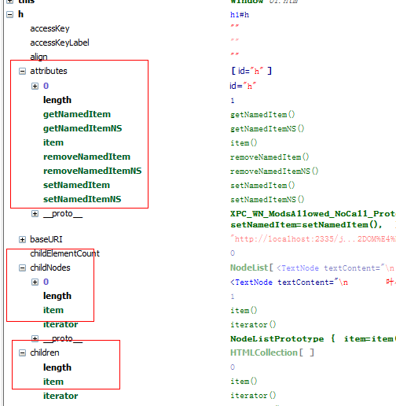
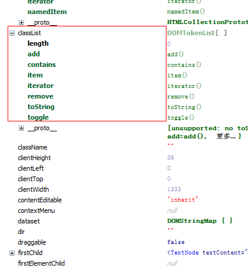
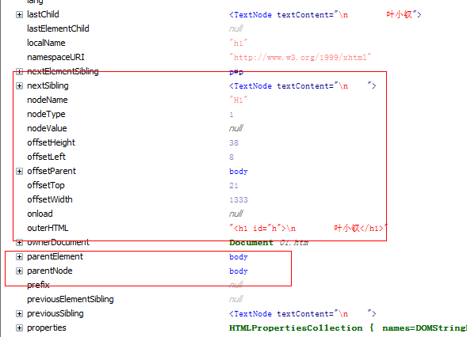
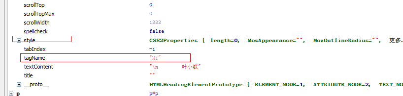
框住的东西都是需要注意的（并且关于样式的东西在IE中还会有兼容的问题），我们一般不必关心这些东西，但是真正用到的时候要知道如何查询才行
name选择
<html xmlns="http://www.w3.org/1999/xhtml">
<head>
<title>刀狂剑痴</title>
</head>
<body>
<h1 id="h" name="w">
叶小钗</h1>
<p id="p">
叶小钗·<strong id="strong">中原剑圣</strong></p>
<p name="w">
1</p>
<p name="w">
2</p>
<p name="w">
3</p>
<p name="w">
4</p>
<script type="text/javascript">
var p = document.getElementsByName('w');
var s = '';
</script>
</body>
</html>
根据name可以选择一个群：
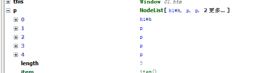
标签选择
<html xmlns="http://www.w3.org/1999/xhtml"> <head> <title>刀狂剑痴</title> </head> <body> <h1 id="h" name="w"> 叶小钗</h1> <p id="p"> 叶小钗·<strong id="strong">中原剑圣</strong></p> <p name="w"> 1</p> <p name="w"> 2</p> <p name="w"> 3</p> <p name="w"> 4</p> <script type="text/javascript"> var p = document.getElementsByTagName('p'); var s = ''; </script> </body> </html>
与上面一致，这些看起来都很简单似的，那么我们现在要获取一个东东，在不使用id，不使用jquery其实并不像我们想的那么简单：
比如：我要获取这么一个东东：
<div class="yxc"> <h1 id="h" name="w"> 叶小钗</h1> <div id="p"> 叶小钗·<strong id="strong">中原剑圣</strong></div> <div name="w"> 1</div> <div name="w"> <p> </p> <p class="come"> 来吧，获取我吧，我是你的了1</p> <p> </p> <p class="come"> 来吧，获取我吧，我是你的了2</p> <p class="ccc come"> </p> <p class="vvv"> </p> </div> <p name="w"> 3</p> <p name="w"> 4</p> </div>
认为简单的同学去获取他吧，反正就是获取具有come css的元素，不许使用HTML5的东西哦，我不知道你痛苦不，我反正十分痛苦：
var dom = [];
var ps = document.getElementsByTagName('div')[0].children[3].children;
for (var i = 0, len = ps.length; i < len; i++) {
var el = ps[i];
for (var j = 0; j < el.classList.length; j++) {
if (el.classList[j] == 'come') {
dom.push(el);
break;
}
}
}
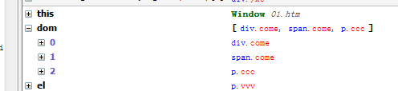
属性
HTML由一个标签和一组称为属性飞键值对组成，我们一般使用getAttribute与setAttribute来获取与设置属性（使用.的方式也可以，但是这个更标准）。
因为属性无法使用delete删除，所以还提供了hasAttribute与removeAttribute来判断标签是否含有某属性以及去掉标签的某个属性。
自定义属性
我平时定义自定义属性时候五花八门，所以便需要用到set/getAttribute，但是这样却破坏了HTML的有效性，这样并不好。
HTML5中，提供一种解决方案，任何以data-前缀的自定义属性认为是合法的，所以我们以后的自定义属性还是需要注意的，
为了支持data-的属性，HTML5特别提供dataset属性获取去掉前缀的属性对象，为了兼容之前的浏览器，估计这个用得不多。
获取HTML元素的内容
这个东东其实没有什么说的：
innerHTML获取元素内部所有文本和标签
innerText获取元素内部文本
outerHTML获取标签元素
需要注意的是，在一些浏览器中式不能直接操作tr与table的innerHTML的。
创建、插入、删除
我们有时候会异步加载js，于是会有以下代码：
function loadAsncJs(url) { var head = document.getElementsByName('head')[0]; var s = document.createElement('script'); s.setAttribute('src', url); //s.src=url head.appendChild(s); }
插入节点有两种方法：appendChild与insertBefore
insertBefore提供两个参数：
1 待插入节点
2 已存在节点
新节点会插入其前面，第二个参数为空的话，其表现与appendChild一致
删除节点就比较诡异了，因为他能直接删除，而是发生在节点的父元素上：
//比如我们要删除el需要这样做： el.parentNode.removeChild(el);
另外我若是想替换一个节点，可以这样做：
el.parentNode.replace(newDom);
节点坐标与视口坐标
节点坐标便是元素相对于left与top的距离；
而视口坐标便是元素当前在浏览器的位置，比如y坐标本来是200但是滚动了70，那么其视口坐标便是130；
视口坐标的使用十分普遍，我们经常就会拖动元素，所以还是需要掌握的，但是这里的兼容性问题还是不少的：
获取窗口滚动条位置
Window对象的pageXOffset与pageYOffset基本所有浏览器都支持，当然我们的IE会站出来说“不”！
所以我们使用的最常用的还是scrollLeft与scrollTop属性来获取滚动条位置
但是正常情况下查询文档的跟节点就能获取，怪异模式时候变需要使用到body元素了，这个坑可大了！
function getScrollOffset(w) { w = w || window; //可能是iframe if (w.pageXOffset != null) { return { x: w.pageXOffset, y: w.pageYOffset }; } //标准浏览器情况下 var d = w.document; if (document.compatMode == 'CSS1Compat') { return { x: d.documentElement.scrollLeft, y: d.documentElement.scrollTop }; } //怪异模式 return { x: d.body.scrollLeft, y: d.body.scrollTop }; }
查询元素的几何尺寸
获取元素的尺寸的应用也非常多，我今天才用到了呢，而且在手机上还错了呢。。。
有些时候本来你认为比较不好获得的东西，其实他就在那里了，getBoundingClientRect直接告诉了我们答案：
var ss = document.getElementById('w').getBoundingClientRect();
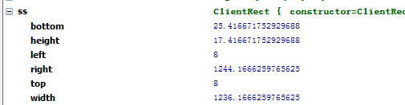
其中的width和height有一点兼容性问题，使用时候最好用right-left获取宽度
注意：需要定位到元素上需要加上滚动距离，并且该方法的兼容性无法确定，我们还是老老实实的使用offsetWidth等属性吧：
function getOffset(el) { if (!el) return null; return { x: el.offsetLeft, y: el.offsetTop, width: el.offsetWidth, height: el.offsetHeight }; }
判断元素是否在某点
看到此属性时，我首先想到的就是e属性，典型应用就是判断鼠标点在了什么上：
Document的elementFromPoint方法可以判断指定坐标上有什么元素！
当鼠标信息出现在e中的那一刻，该方法的意义就不大了
有意思的东东
var cookie = document.cookie; var domain = document.domain; var referrer = document.referrer; //上一文档的url var location = document.location;
查询选取文本
有时候我们需要判断用户选取了哪些文本，并做处理:
function getSecText() { if (window.getSection) { return window.getSelection(); //html5 } else if (document.selection){ return document.selection.createRange().text; } }
BOM
浏览器对象模型 Browser Object Model
说白点就是window这个东东：表示浏览器的一个实例，是访问浏览器窗口的一个接口，也是ECMAScript规定的Global对象。
意思是我们定义的所以所有的东西，都与window有关，他是客户端给javascript程序的全局对象。
计时器
javascript的计时器有setTimeout与setInterval两种，一个是在一定时间后执行，一个是重复执行。
这两个东西大家应该都很熟悉了，但是在实际应用中，setTimeout却带给了我们不一样的东西，比如优化！
setTimeout的优化点可以是以下地方：
① 鼠标移动标签上加载数据（发起http请求），但我们鼠标可能无意义的划过，所以延迟点加载若是无意义请求便取消
② 无论鼠标事件或者窗口改变事件，我们都可以使用这个家伙
一个简单的例子：
(function () { var ajax = $('#ajax'); var TIMER = null; var TIMER_STEP = 500; ajax.mousemove(loadMenu); ajax.mouseout(function () { if (TIMER) clearTimeout(TIMER); }); function loadMenu() { if (TIMER) clearTimeout(TIMER); TIMER = setTimeout(function () { //do someting }, TIMER_STEP); } })();
浏览器的定位和导航
对URL的请求总是非常常见的，location对象的获取便可处理之，比如我们经常想获取url 的参数：
function getUrlParam(name) { var args = {}; var query = document.location.search.substring(1); //去掉? var arr_param = query.split('&'); for (var i = 0, len = arr_param.length; i < len; i++) { var arr_tmp = arr_param[i].split('='); if (arr_tmp.length == 2) { args[arr_tmp[0]] = decodeURIComponent(arr_tmp[1]); } } if (name && args[name]) return args[name]; return args; } var p = getUrlParam();
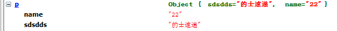
结语
今天暂时到这，昨天晚上楼下有几个当兵的喝酒聊天搞到3点钟，我这里确实被搞崩溃了，而且又不敢去说点什么。。。。这里住了几百户人也没人去说下。。。
当兵的真嚣张啊。。。。我们下次继续吧，若是我不再写博客了就一定当兵去了，大家不要想念我。